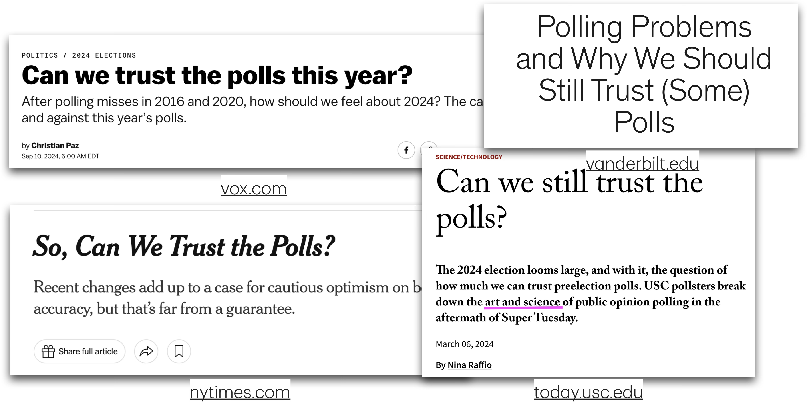
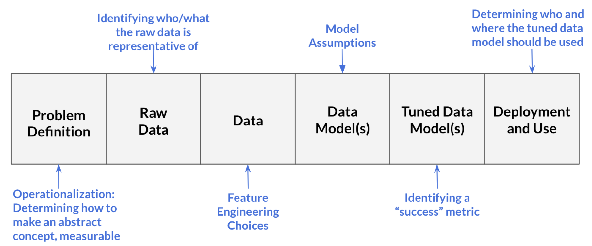

library(tidyverse)
library(tidymodels)
library(pROC)
library(knitr)
library(kableExtra)
# set default theme in ggplot2
ggplot2::theme_set(ggplot2::theme_bw())Data science ethics
Announcements
HW 04 due Thursday, April 9 at 11:59pm
Next project milestone: Draft report due Friday, April 10 (before lab)
Exam 02
In-class: April 14
Take-home: April 14 - 16
Topics
- Confidence interval for an individual coefficient
- Data science ethics
Computational setup
Risk of coronary heart disease
This data set is from an ongoing cardiovascular study on residents of the town of Framingham, Massachusetts. We want to examine the relationship between various health characteristics and the risk of having heart disease.
high_risk:- 1: High risk of having heart disease in next 10 years
- 0: Not high risk of having heart disease in next 10 years
age: Age at exam time (in years)totChol: Total cholesterol (in mg/dL)currentSmoker: 0 = nonsmoker, 1 = smokereducation: 1 = Some High School, 2 = High School or GED, 3 = Some College or Vocational School, 4 = College
Test for a single coefficient
Hypotheses: \(H_0: \beta_j = 0 \hspace{2mm} \text{ vs } \hspace{2mm} H_a: \beta_j \neq 0\), given the other variables in the model
. . .
(Wald) Test Statistic: \[z = \frac{\hat{\beta}_j - 0}{SE(\hat{\beta}_j)}\]
where \(SE(\hat{\beta}_j)\) is the square root of the \(j^{th}\) diagonal element of \(Var(\hat{\boldsymbol{\beta}})\)
. . .
P-value: \(P(|Z| > |z|)\), where \(Z \sim N(0, 1)\), the Standard Normal distribution
Coefficient for age
| term | estimate | std.error | statistic | p.value | conf.low | conf.high |
|---|---|---|---|---|---|---|
| (Intercept) | -6.673 | 0.378 | -17.647 | 0.000 | -7.423 | -5.940 |
| age | 0.082 | 0.006 | 14.344 | 0.000 | 0.071 | 0.094 |
| totChol | 0.002 | 0.001 | 1.940 | 0.052 | 0.000 | 0.004 |
| currentSmoker1 | 0.443 | 0.094 | 4.733 | 0.000 | 0.260 | 0.627 |
. . .
Hypotheses:
\[ H_0: \beta_{age} = 0 \hspace{2mm} \text{ vs } \hspace{2mm} H_a: \beta_{age} \neq 0 \], given total cholesterol and smoking status are in the model.
Coefficient for age
| term | estimate | std.error | statistic | p.value | conf.low | conf.high |
|---|---|---|---|---|---|---|
| (Intercept) | -6.673 | 0.378 | -17.647 | 0.000 | -7.423 | -5.940 |
| age | 0.082 | 0.006 | 14.344 | 0.000 | 0.071 | 0.094 |
| totChol | 0.002 | 0.001 | 1.940 | 0.052 | 0.000 | 0.004 |
| currentSmoker1 | 0.443 | 0.094 | 4.733 | 0.000 | 0.260 | 0.627 |
Test statistic:
\[z = \frac{ 0.0825 - 0}{0.00575} = 14.34 \]
Coefficient for age
| term | estimate | std.error | statistic | p.value | conf.low | conf.high |
|---|---|---|---|---|---|---|
| (Intercept) | -6.673 | 0.378 | -17.647 | 0.000 | -7.423 | -5.940 |
| age | 0.082 | 0.006 | 14.344 | 0.000 | 0.071 | 0.094 |
| totChol | 0.002 | 0.001 | 1.940 | 0.052 | 0.000 | 0.004 |
| currentSmoker1 | 0.443 | 0.094 | 4.733 | 0.000 | 0.260 | 0.627 |
P-value:
\[P(|Z| > |14.34|) \approx 0 \]
. . .
2 * pnorm(14.34,lower.tail = FALSE)[1] 1.230554e-46Coefficient for age
| term | estimate | std.error | statistic | p.value | conf.low | conf.high |
|---|---|---|---|---|---|---|
| (Intercept) | -6.673 | 0.378 | -17.647 | 0.000 | -7.423 | -5.940 |
| age | 0.082 | 0.006 | 14.344 | 0.000 | 0.071 | 0.094 |
| totChol | 0.002 | 0.001 | 1.940 | 0.052 | 0.000 | 0.004 |
| currentSmoker1 | 0.443 | 0.094 | 4.733 | 0.000 | 0.260 | 0.627 |
Conclusion:
The p-value is very small, so we reject \(H_0\). The data provide sufficient evidence that age is a statistically significant predictor of whether someone is high risk of having heart disease, after accounting for total cholesterol and smoking status.
Confidence interval for \(\beta_j\)
We can calculate the C% confidence interval for \(\beta_j\) as the following:
\[ \Large{\hat{\beta}_j \pm z^* \times SE(\hat{\beta}_j)} \]
where \(z^*\) is calculated from the \(N(0,1)\) distribution
. . .
This is an interval for the change in the log-odds for every one unit increase in \(x_j\)
Interpretation in terms of the odds
The change in odds for every one unit increase in \(x_j\).
\[ \Large{\exp\{\hat{\beta}_j \pm z^* \times SE(\hat{\beta}_j)\}} \]
. . .
Interpretation: We are \(C\%\) confident that for every one unit increase in \(x_j\), the odds multiply by a factor of \(\exp\{\hat{\beta}_j - z^* \times SE(\hat{\beta}_j)\}\) to \(\exp\{\hat{\beta}_j + z^* \times SE(\hat{\beta}_j)\}\), holding all else constant.
CI for age
| term | estimate | std.error | statistic | p.value | conf.low | conf.high |
|---|---|---|---|---|---|---|
| (Intercept) | -6.673 | 0.378 | -17.647 | 0.000 | -7.423 | -5.940 |
| age | 0.082 | 0.006 | 14.344 | 0.000 | 0.071 | 0.094 |
| totChol | 0.002 | 0.001 | 1.940 | 0.052 | 0.000 | 0.004 |
| currentSmoker1 | 0.443 | 0.094 | 4.733 | 0.000 | 0.260 | 0.627 |
Interpret the 95% confidence interval for age in terms of the odds of being high risk for heart disease.
Overview of testing coefficients
Test a single coefficient
Drop-in-deviance test
Wald hypothesis test and confidence interval
. . .
Test a subset of coefficients
- Drop-in-deviance test
. . .
Can use AIC and BIC to compare models in both scenarios
Data science ethics
When things go wrong

Gap in public trust

“…coverage of polls [data science] often does not adequately convey the many decisions that pollsters [data scientists] must make … as well as the potential consequences of those decisions”
Clinton, J. (2021, January 11). Polling problems and why we should still trust (some) polls. The Vanderbilt Project on Unity and American Democracy. https://www.vanderbilt.edu/unity/2021/01/11/polling-problems-and-why-we-should-still-trust-some-polls/
“Ideal objectivity?”
Desire for “ideal objectivity”
Work that is free from interference of human perception (Feinberg 2023)
Conclusions that are observer independent (Gelman and Hennig 2017)
Feels like the ethical approach (Feinberg 2023)
There are implications (Feinberg 2023)
Distorted reality of data analysis process
Lack of communication about decisions that don’t seem “objective”
The role of data science ethics
Illuminates the the decision-making in data science
Makes explicit the existence of choice throughout an analysis
Makes explicit the moral implications of our choices
Align data science practices with what we ought to do and moral duties to stakeholders
Source: Colando and Hardin (2024b)
Processes in data science

- Problem definition: Question we wish to answer with data
- What is the likelihood a customer purchases product S?
- Our model (built on training data) is successful if it achieves at least 75% accuracy on testing data
Source: Colando and Hardin (2024b)
Processes in data science
- Raw data: Information collected by interacting with the world
- Information from each time the customer clicks on an advertisement for product S
- Includes timestamps for each advertisement interaction and the customer’s demographic information
Source: Colando and Hardin (2024b)
Processes in data science
- Data: Processed form of raw data
- Data table where each row represents a unique customer and the columns are the variables that describe that customer
- Includes information from raw data and engineered variables (e.g., average time between clicks)
- We decide what to do with missing data
Source: Colando and Hardin (2024b)
Processes in data science
- Data model(s): Product from running input data through learning algorithm (generalize the relationship between variables in the data)
- We choose a logistic regression model of the form
\[ \log(\frac{\pi}{1-\pi}) = \beta_0 + \beta_1 ~ \text{age} + \beta_2 ~ \text{number clicks} + \beta_3 ~ \text{avg time between clicks} \]
Source: Colando and Hardin (2024b)
Processes in data science
- Tuned data model(s): Data model in which the parameters are adjusted
- Use 5-fold cross validation to determine which variables to include in order to improve model’s accuracy
Source: Colando and Hardin (2024b)
Processes in data science
- Deployment and usage: Generating predictions (or other output) from the tuned model
- Determine that the model should only be used for customers under a certain age
- Determine only data scientists at the company selling product S should be able to access model and sell products from it
Source: Colando and Hardin (2024b)
Your data science process

What are some decisions you have made (or will make) in your project or other data analysis work?
What is data science ethics?
Data science ethics studies and evaluates moral problems related to:
Data: generation, recording, process, dissemination, and sharing
Algorithms: artificial intelligence, machine learning, large language models, and statistical learning models
Corresponding practices: responsible innovation, programming, hacking, professional code
Data science ethics issues
Bias, fairness, and justice
Causation
Data privacy and informed consent
Explainability, interpretability, and transparency
Responsibility
Applications in government and policing
Professional ethics
Reproducibility
..and more
Data Science Oath
I will not be ashamed to say, “I know not,” nor will I fail to call in my colleagues when the skills of another are needed for solving a problem.
I will respect the privacy of my data subjects, for their data are not disclosed to me that the world may know, so I will tread with care in matters of privacy and security.
I will remember that my data are not just numbers without meaning or context, but represent real people and situations, and that my work may lead to unintended societal consequences, such as inequality, poverty, and disparities due to algorithmic bias.
From National Academies of Sciences, Engineering, and Medicine (2018) based on the Hippocratic Oath for physicians.
Responsibility
The data scientist is (morally) responsible for
- How the data are handled and stored
- Modeling decisions
- Implications of data handling and modeling
- Providing clear documentation and guidance on model use
. . .
The user is (morally) responsible for
- Understanding the model and its limitations
- How the model is deployed
Source: Colando and Hardin (2024b)
Example: Mistaken identity
Angela Lipps, from Tennessee, spent 5 months in jail after facial recognition software connected her to a string of bank fraud cases in Fargo, North Dakota
- Police were investigating a string of cases in Fargo, ND in which a woman used a fake ID to withdraw money from a bank account or home-equity line of credit
- Investigators used facial recognition technology to identify a potential suspect based on bank surveillance video
- The software “identified a potential suspect with similar features to Angela Lipps”
Source: New York Times
Example: Mistaken identity
- Police used Angela Lipps’ Facebook and Instagram accounts, along with her Tennessee ID to determine she matched the identified suspect
- She was released from jail after a judge dismissed the case
Source: New York Times
Example: Mistaken identity
Facial recognition company, Clearview AI uses “publicly available images” for its data base and to train its models used by law enforcement agencies
Their statement on how models should be used:
“Once a search is performed, the search may return a set of potential leads, which the investigator is required to independently verify by both peer review and other means, before continuing with their investigation.”
Website reports “99% accuracy for all demographics”
Source: https://www.clearview.ai/
Example: Mistaken identity
- What are the ethical considerations and responsibilities for the data scientists building such facial recognition technology?
- What are the ethical considerations and responsibilities for those using such facial recognition technology?
Example case study
A data analyst received permission to analyze a data set that was scraped from a social media site. The full data set included name, screen name, email address, geographic location, IP (internet protocol) address, demographic profiles, and preferences for relationships.
What are ethical considerations of putting a deidentified data set with name and email address removed in a LLM (e.g., Claude or ChatGPT) to help with analysis?
Adapted from Chapter 8 of Baumer, Kaplan, and Horton (2024)
Further reading
Further reading
When things go wrong examples:
Cambridge Analytica made ‘ethical mistakes’ because it was too focused on regulation, former COO says from Vox.com
How big data is helping states kick poor people off welfare from Vox.com
How AI researchers uncover ethical, legal risks to using popular data sets from the Washington Post
Boeing’s manufacturing, ethical lapses go back decades from the Seattle Times
Further reading
Gap in public trust examples
Can we trust the polls this year? from Vox.com
Polling problems and why we should still trust (some) polls from Vanderbilt Project on Unity and American Democracy
So, can we trust the polls? from New York Times
Can we still trust the polls? from University of Southern California
Recap
Confidence interval for an individual coefficient
Data science ethics
Next class
Exam 02 review
No prepare assignment
References
Baumer, Benjamin S, Daniel T Kaplan, and Nicholas J Horton. 2024. Modern Data Science with r. 3rd ed. https://mdsr-book.github.io/mdsr3e/.
Colando, Sara, and Jo Hardin. 2024a. “Data Science Ethics.” 2024. https://scolando.github.io/data-science-ethics/.
Colando, Sara, and Johanna Hardin. 2024b. “Philosophy Within Data Science Ethics Courses.” Journal of Statistics and Data Science Education 32 (4): 361–73.
Feinberg, Melanie. 2023. “The Myth of Objective Data.” MIT Press Reader. 2023. https://thereader.mitpress.mit.edu/the-myth-of-objective-data/.
Floridi, Luciano, and Mariarosaria Taddeo. 2016. “What Is Data Ethics?” Philosophical Transactions of the Royal Society A: Mathematical, Physical and Engineering Sciences 374 (2083).
Gelman, Andrew, and Christian Hennig. 2017. “Beyond Subjective and Objective in Statistics.” Journal of the Royal Statistical Society Series A: Statistics in Society 180 (4): 967–1033.
National Academies of Sciences, Engineering, and Medicine. 2018. “Envisioning the Data Science Discipline: The Undergraduate Perspective.” 2018. https://www.nationalacademies.org/projects/DEPS-CSTB-16-01.